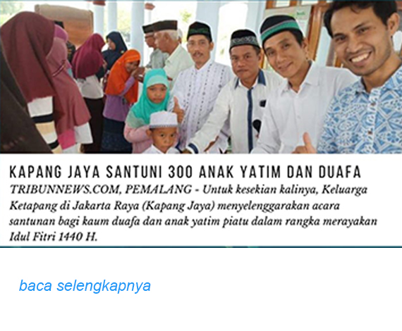
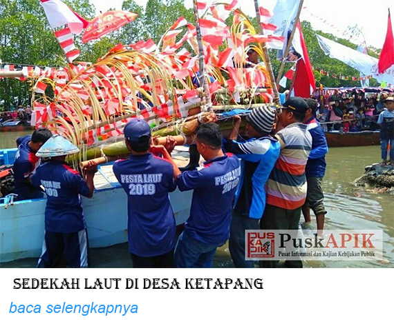
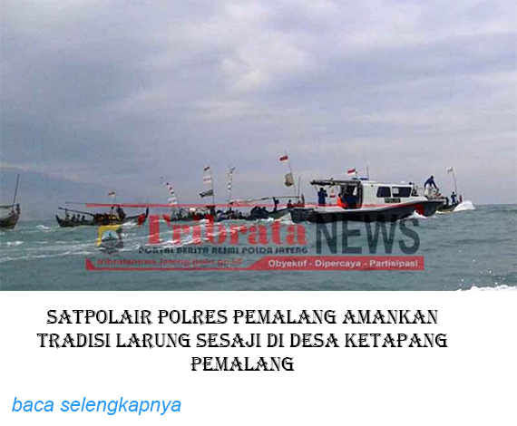

Ketapang merupakan desa yang berbatasan langsung dengan laut Jawa.
Desa Ketapang termasuk kategori Pusat Kegiatan Lokal yang memiliki potensi dengan fungsi pusat perikanan. Desa Ketapang memiliki potensi sumber daya alam yang menjadi komoditas unggulan yaitu hasil laut, Ikan Bandeng, Udang Vanname, Cumi, Sotong dll. Yang dimana komoditas unggulan tersebut menjadi mata pencaharian bagi warga Desa Ketapang.
berada di lingkup administratif Kabupaten Pemalang yang memiliki luas wilayah 1.985 km² dengan batas Administratif Sebelah utara : Laut Jawa, Sebelah selatan : Desa Padek, Desa Sarwodadi, Sebelah barat : Desa Limbangan, Sebelah timur : Desa Blendung, .
Desa Ketapang adalah salah satu desa pesisir di kecamatan Ulujami. Sebagian besar penduduknya menggantung kehidupannya pada alam, seperti petani, nelayan dan lain–lain. Di Desa tersebut terdapat sebuah tempat yang dianggap keramat oleh sebagian besar masyarakat yang dikenal dengan nama ampel. Jika kita mendengar hal tersebut terasa merinding karena banyak asumsi masyarakat bahwa tempat tersebut merupakan sebuah patilasan seorang ulama hebat yang dianggap sebagai pendiri atau pemberi nama Ketapang yang menyimpan berbagai misteri dan benda – benda pusaka..
Visi Desa Ketapang adalah: “ TERWUJUDNYA MASYARAKAT YANG SEHAT, CERDAS, SEJAHTERA, MANDIRI DAN BERAKHLAKUL KARIMAH ” MISI desa Ketapang maka misii Desa Padek adalah : 1. Peningkatan produksi tanaman pangan, peternakan dan perkebunan. 2. Peningkatan sarana dan sarana transportasi 3. Peningkatan sumber daya manusia (SDM) yang produktif, bedaya pikir tinggi, dan berwawasan lingkungan serta memberdayakan potensi yang ada terutama pertanian. 4. Penguatan lembaga terhadap 3 (tiga) Kelompok Tani 5. Perwujudan kondisi masyarakat yang aman dan iklim usaha yang bagus. 6. Peningkatan taraf kesehatan masyarakat..
Desa Ketapang memiliki Potensi alam berupa Ikan Bandeng, Udang Vaname, dan hasil laut.



{kind=link}
{kind=link}
{kind=link}
{kind=link}
{kind=link}
{kind=link}